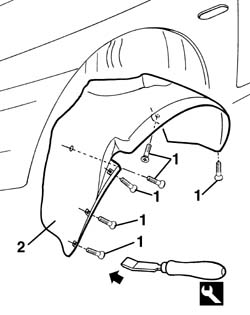

7055B42 Additional FRONT WHEEL ARCH (one), left or right - R.R.
- Path
- Procedures > 70 FITTINGS > 7055 MOULDING AND PROTECTION > 7055B exterior protections > 7055B42 Additional FRONT WHEEL ARCH (one), left or right - R.R.
- Kind
- repair procedure (removal / refitting; the operation number is the code)
- Applies to
- all engines; all production periods
- Interactive page
- https://sloeber94.github.io/elrnDB-a156/en/#/3238964
Applies to: all engines; all production periods
 Removing
Removing
 Refitting
RefittingRemove the wheel.
1. Unscrew the screws.
2. By using the proper tool, remove the supplementary wheel loop.
 | Name | Country |
|---|---|---|
2 | Scraper blade | 1.823.014.000 |

Applies to: all engines; all production periods
Refitting
RemovingMake sure that the wheel loop is not damaged.
Place the supplementary wheel loop.
Screw the screws.
Install the wheel again.
Topics that link to this page (43)
- 1004B12 power unit with manual gearbox - r+r for versions with a/c
- 1004B26 power unit with aisin and q system automatic transmission
- 1020D38 flywheel side oil seal - replace
- 1024B10 engine flywheel - r + r for versions with manual gearbox
- 1024B20 engine flywheel - r + r for versions with automatic transmission
- 1036H14 valve tappets - check clearance
- 1048A21 filter input sleeve - r r
- 1048A23 cold air intake - r r
- 1080E20 active carbon filter for fuel vapours - r + r
- 1080E24 fuel vapour by-pass valve/solenoid - r + r
- 1080E59 Fuel vapour PIPE from INTERMEDIATE pipe to ACTIVE CHARCOAL FILTER - R.R.
- 1080E62 pipe from fuel vapour separator to solenoid - r r
- 1080E65 Fuel vapour PIPE from SOLENOID VALVE to AIR INTAKE CHAMBER pipe - R.R.
- 1088E11 fans with single engine duct - r+r
- 1810A20 clutch - r + r
- 1820A24 thrust bearing linkage - r + r
- 2110A10 manual gearbox and differential - r + r
- 2110C22 gear input shaft seals - r r
- 2130A10 automatic transmission - r + r
- 2130A20 automatic transmission fluid cooling fan - r r
- 2130A22 cooling radiator of automatic transmission hydraulic circuit - r + r - including fluid level top up if necessary
- 2130A58 Automatic transmission fluid cooling radiator mounting BRACKET - R.R.
- 2130B12 automatic transmission torque converter - r+r
- 4130B49 return pipe from power steering case to heat exchanger pipe r r
- 4130B52 heat exchanger pipe - r+r
- 4130B54 return pipe from heat exchanger pipe to power steering fluid resevior r r
- 4130B71 intermediate return pipe between power steering case and heat exchanger r r for right hand drive versions
- 4130B93 RIGID return PIPE from INTERMEDIATE rubber PIPE to rubber PIPE for power assisted steering fluid RESERVOIR - R.R. Includes bleeding air - for right hand drive versions
- 5040A20 air conditioner compressor - r+r - includes fluid level check and top up if necessary
- 5040A26 compressor mount - r r
- 5040A40 air conditioner condenser - r+r
- 5040A50 pipe from compressor to air conditioner condenser - r+r
- 5040B14 air conditioner system multi-level pressure switch - r+r
- 5530A14 alternator - r+r for versions with air conditioner
- 5540B70 Left front LIGHT CLUSTER with direction indicator - R.R.
- 5540B71 Right front LIGHT CLUSTER with direction indicator - R.R.
- 5550B30 l/h or r/h horn (one) - r+r
- 5580E46 antitheft device ecu / siren unit r + r
- 7025A10 bonnet lid - square
- 7025A18 l/h or r/h bonnet lid hinge (one) - r+r with lid removed
- 7055A40 radiator shield - r r
- 7055B08 (One) GRILLE on front bumper - R.R.
- 7210E10 R.R. FRONT BUMPER